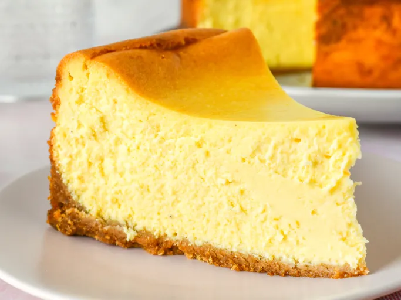

New York Style Cheesecake
This classic New York style cheesecake is rich, creamy, and perfect for any occasion.
Who can resist a slice of this creamy delight?

Ingredients
- 18 graham crackers, crushed
- 3 tablespoons melted butter
- 1 cup sour cream
- ¼ cup all-purpose flour
- 1 tablespoon vanilla extract
- 4 (8 ounce) packages cream cheese
- 1 ½ cups white sugar
- ⅔ cup milk
- 4 large eggs
- 1 teaspoon finely grated lemon zest
- 1 teaspoon finely grated orange zest
Instructions
- Step 1: Preheat the oven to 350 degrees F (175 degrees C).
Lightly grease the bottom and sides of a 9-inch springform
pan.
- Step 2: Mix graham cracker crumbs and melted butter together
in a bowl until evenly moistened. Press crumb mixture into
the bottom and about 1/2 inch up the sides of the springform
pan.
- Step 3: Whisk sour cream, flour, and vanilla extract together
in a bowl; set aside.
- Step 4: Stir cream cheese and sugar together with a wooden
spoon in a separate bowl until evenly incorporated, 3 to 5
minutes; add milk and whisk until just combined. Whisk in
eggs, one at a time, stirring well after each addition. Stir
in lemon zest, orange zest, and sour cream mixture; whisk
until just incorporated.
- Step 5: Pour mixture into prepared springform pan.
- Step 6: Bake in the preheated oven until the edges have
nicely puffed and the surface of the cheesecake is firm
except for a small spot in the center that will jiggle when
the pan is gently shaken, about 1 hour.
- Step 7: When the cheesecake is done, turn off the oven and
let it cool in the oven for 3 to 4 hours. This prevents any
cracks from forming on the top of the cheesecake.
- Step 8: Serve and enjoy!